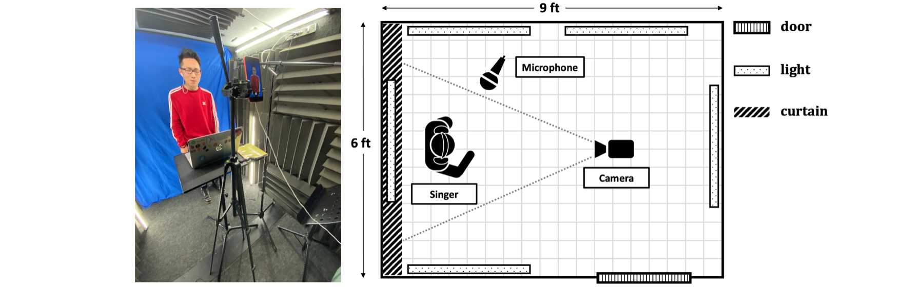

University of Rochester Singing Performance (URSing) Dataset
Overview
We introduce a dataset for facilitating audio-visual analysis of singing performances. The dataset comprises a number of singing performances as audio and video recordings. Each song contains the isolated track of solo singing voice and the mixure with accompaniment track. We anticipate that the dataset will be useful for multi-modal analysis of singing performances, such as audiovisual singing voice separation, and serve as ground-truth for evaluations.
Creation Process

Singers are students from the University of Rochester.
The singing voice is recorded in a sound booth.
Singers listen to the accompaniment track from headphone while singing the solo voice.
Dataset Content
The dataset is organized as 65 folders for the 65 song. For each song folder we have the following files: